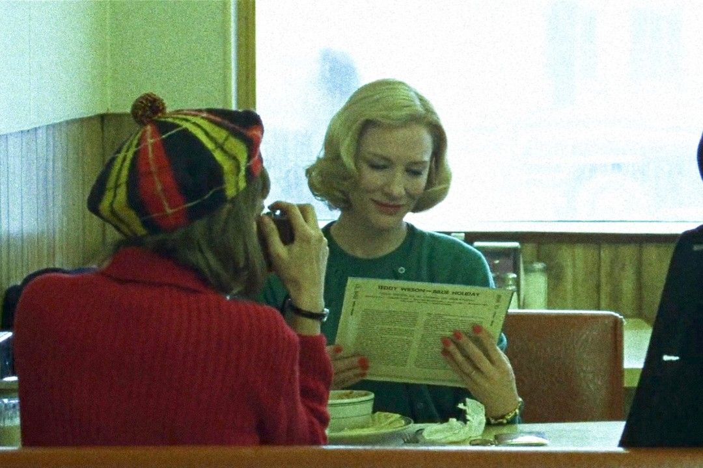

EL ROMANCE QUE MARCÓ UNA ÉPOCA
En Carol, dirigida por Todd Haynes, Cate Blanchett interpreta a Carol Aird, una mujer elegante y enigmática que desafía las normas sociales de su época al enamorarse de una joven fotógrafa (Rooney Mara).
La película fue elogiada por su delicadeza visual, la profundidad de su historia y la química entre sus protagonistas.
La actuación de Blanchett fue considerada hipnótica y le valió nominaciones al Óscar, Globo de Oro y BAFTA, reafirmando su posición como una de las actrices más versátiles y respetadas de Hollywood.
